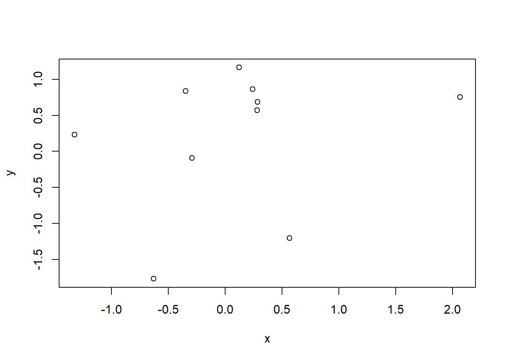

47 Generating random numbers
One way to generate numeric data is to pull random numbers from some distribution. This can be done via the functions for generating random deviates. These functions always start with r (for “random”).
The basic distributions that I use the most for generating random numbers are the normal (rnorm()) and uniform (runif()) distributions. We’ll look at those today, plus the Poisson (rpois()) distribution for generating discrete counts.
There are many other distributions available as part of the stats package (e.g., binomial, F, log normal, beta, exponential, Gamma) and, as you can imagine, even more available in add-on packages. I recently needed to generate data from the Tweedie distribution to test a modeling tool, which I could do via package tweedie.
The r functions for a chosen distribution all work basically the same way. We define how many random numbers we want to generate in the first argument (n) and then define the parameters for the distribution we want to draw from. This is easier to see with practice, so let’s get started.
47.1 rnorm() to generate random numbers from the normal distribution
I use rnorm() a lot, sometimes with good reason and other times when I need some numbers and I really don’t care too much about what they are.
There are three arguments to rnorm(). From the Usage section of the documentation:
rnorm(n, mean = 0, sd = 1) The
nargument is the number of observations we want to generate. Themeanandsdarguments show what the default values are (note thatsdis the standard deviation, not the variance). Not allrfunctions have defaults to the arguments like this.
To get 5 random numbers from a \(Normal(0, 1)\) (aka the standard normal) distribution we can write code like:
rnorm(5)
#> [1] -0.154 -0.181 1.063 1.752 2.318There are a couple things about this code and the output to discuss.
First, the code got me 5 numbers, which is what I wanted. However, the code itself isn’t particularly clear. What I might refer to as lazy coding on my part can look pretty mysterious to someone reading my code (or to my future self reading my code). Since I used the default values for mean and sd, it’s not clear exactly what distribution I drew the numbers from.
47.1.1 Writing out arguments for clearer code
Here’s clearer code to do the same thing, where I write out the mean and standard deviation arguments explicitly even though I’m using the default values. It is certainly not necessary to always be this careful, but I don’t think I’ve run into a time when it was bad to have clear code.
rnorm(n = 5, mean = 0, sd = 1)
#> [1] -0.498 0.410 0.736 -0.166 -0.98547.1.2 Setting the random seed for reproducible random numbers
Second, if we run this code again we’ll get different numbers. To get reproducible random numbers we need to set the seed via set.seed().
Making sure someone else will be able to exactly reproduce your results when running the same code can be desirable in teaching. It is also is useful when making an example dataset to demonstrate a coding issue, like if you were asking a code question on Stack Overflow.
I also will set the seed when I’m making a function for simulations and I want to make sure it works correctly. Otherwise in most simulations we don’t actually want or need to set the seed.
If we set the seed prior to running rnorm(), we can reproduce the values we generate.
set.seed(16)
rnorm(n = 5, mean = 0, sd = 1)
#> [1] 0.476 -0.125 1.096 -1.444 1.148If we set the seed back to the same number and run the code again, we get the same values.
set.seed(16)
rnorm(n = 5, mean = 0, sd = 1)
#> [1] 0.476 -0.125 1.096 -1.444 1.14847.1.3 Change parameters in rnorm()
For getting a quick set of numbers it’s easy to use the default parameter values in rnorm() but we can certainly change the values to something else. For example, when I’m exploring long-run behavior of variance estimated from linear models I will want to vary the standard deviation values.
The sd argument shows the standard deviation of the normal distribution. So drawing from a \(Normal(0, 4)\) can be done by setting sd to 2.
rnorm(n = 5, mean = 0, sd = 2)
#> [1] -0.937 -2.012 0.127 2.050 1.146I’ve seen others change the mean and standard deviation to create a variable that is within some specific range, as well. For example, if the mean is large and the standard deviation small in relation to the mean we can generate strictly positive numbers. (I usually use runif() for this, which we’ll see below.)
rnorm(n = 5, mean = 50, sd = 20)
#> [1] 86.9 52.2 35.1 83.2 64.447.1.4 Using vectors of values for the parameter arguments
We can pull random numbers from a normal distribution with distinct parameters if we use a vector for the parameter arguments. For example, this could be useful for simulating data with different group means but the same variance. We might want to use something like this if we were making data that we would analyze using an ANOVA.
I’ll keep the standard deviation at 1 but will draw data from three distribution centered at three different locations: one at 0, one at 5, and one at 20. I request 10 total draws by changing n to 10.
Note the repeating pattern: the function iteratively draws one value from each distribution until the total number requested is reached. This can lead to imbalance in the sample size per distribution.
rnorm(n = 10, mean = c(0, 5, 20), sd = 1)
#> [1] -1.663 5.576 20.473 -0.543 6.128 18.352 -0.314 4.817 21.470 -0.866A vector can also be passed to sd. Here both the means and standard deviations vary among the three distributions used to generate values.
rnorm(n = 10, mean = c(0, 5, 20), sd = c(1, 5, 20) )
#> [1] 1.527 10.271 40.601 0.840 6.085 6.549 0.133 4.645 1.146 -1.022Things are different for the n argument. If a vector is passed to n, the length of that vector is taken to be the number required (see Arguments section of documentation for details).
Here’s an example. Since the vector for n is length 3, we only get 3 values.
rnorm(n = c(2, 10, 10), mean = c(0, 5, 20), sd = c(1, 5, 20) )
#> [1] 0.281 7.724 22.61747.2 Example of using the simulated numbers from rnorm()
Up to this point we’ve printed the results of each simulation. In reality we’d want to save our vectors as objects in R to use them for some further task.
For example, maybe we want to simulate two unrelated variables and then look to see how correlated they appear to be. This can be a fun exercise to demonstrate how variables can appear to be related by chance even when we know they are not, especially at small sample sizes.
Let’s generate two quantitative vectors of length 10, which I’ll name x and y, and plot the results. I’m using the defaults for mean and sd.
x = rnorm(n = 10, mean = 0, sd = 1)
y = rnorm(n = 10, mean = 0, sd = 1)
plot(y ~ x)
47.3 runif() pulls from the uniform distribution
Pulling random numbers from other distributions is extremely similar to using rnorm(), so we’ll go through them more quickly.
I’ve started using runif() pretty regularly, especially when I want to easily generate numbers that are strictly positive but continuous. The uniform distribution is a continuous distribution, with numbers uniformly distributed between some minimum and maximum.
From Usage we can see that by default we pull random numbers between 0 and 1. The first argument, as with all of these r functions, is the number of deviates we want to randomly generate:
runif(n, min = 0, max = 1) Let’s generate 5 numbers between 0 and 1.
runif(n = 5, min = 0, max = 1)
#> [1] 0.999 0.943 0.250 0.648 0.113What if we want to generate 5 numbers between 50 and 100? We can change the parameter values.
runif(n = 5, min = 50, max = 100)
#> [1] 81.6 66.9 82.7 64.3 54.247.4 Example of using the simulated numbers from runif()
One situation where I’ve found runif() handy is when I wanted to demonstrate the effect of the relative size of the variable values on the size of the estimated coefficient in a regression. For example, the size of the coefficient measured in kilometers is smaller than if that variable was converted into meters.
Let’s generate some data with the response variable (y) pulled from a standard normal distribution and then an explanatory variable with values between 1 and 2. The two variables are unrelated.
You see I’m still writing out my argument names for clarity, but you may get a sense how easy it would be to start cutting corners to avoid the extra typing.
set.seed(16)
y = rnorm(n = 100, mean = 0, sd = 1)
x1 = runif(n = 100, min = 1, max = 2)
head(x1)
#> [1] 1.96 1.08 1.71 1.33 2.00 1.45Now simulate a second explanatory variable with values between 200 and 300. This variable is also unrelated to the other two.
x2 = runif(n = 100, min = 200, max = 300)
head(x2)
#> [1] 220 263 210 245 265 257We can fit a multiple regression linear model via lm(). The coefficient for the second variable, with a larger relative size, is generally going to be smaller than the first since the change in y for a “1-unit increase” in x depends on the units of x.
lm(y ~ x1 + x2)
#>
#> Call:
#> lm(formula = y ~ x1 + x2)
#>
#> Coefficients:
#> (Intercept) x1 x2
#> 0.38089 0.10494 -0.0019147.5 Discrete counts with rpois()
Let’s look at one last function for generating random numbers, this time for generating discrete integers (including 0) from a Poisson distribution with rpois().
I use rpois() for generating counts for exploring generalized linear models. I’ve also found this function useful in gaining a better understanding of the shape of Poisson distributions with different means.
The Poisson distribution is a single parameter distribution. The function looks like:
rpois(n, lambda) The single parameter,
lambda, is the mean. It has no default setting so must always be defined by the user.
Let’s generate five values from a Poisson distribution with a mean of 2.5. Note that mean of the Poisson distribution can be any non-negative value (i.e., it doesn’t have to be an integer) even though the observed values will be discrete integers.
rpois(n = 5, lambda = 2.5)
#> [1] 2 1 4 1 247.6 Example of using the simulated numbers from rpois()
Let’s explore the Poisson distribution a little more, seeing how the distribution looks when changing the mean. Being able to look at how the Poisson distribution changes with the mean via simulation helped me understand the distribution better, including why it so often does a poor job modeling ecological count data.
We’ll draw 100 values from a Poisson distribution with a mean of 5. We’ll name this vector y and take a look at a summary of those values.
y = rpois(100, lambda = 5)The vector of values we simulated fall between 1 and 14.
summary(y)
#> Min. 1st Qu. Median Mean 3rd Qu. Max.
#> 1.00 3.00 5.00 4.83 6.00 11.00There is mild right-skew when we draw a histogram of the values.
hist(y)
Let’s do the same thing for a Poisson distribution with a mean of 100. The range of values is pretty narrow; there are no values even remotely close to 0.
y = rpois(100, lambda = 100)
summary(y)
#> Min. 1st Qu. Median Mean 3rd Qu. Max.
#> 76.0 94.8 102.0 101.3 108.0 124.0And the distribution is pretty symmetric compared to the distribution with the smaller mean.
hist(y)
An alternative to the Poisson distribution for discrete integers is the negative binomial distribution. Packages MASS has a function called rnegbin() for random number generation from the negative binomial distribution.